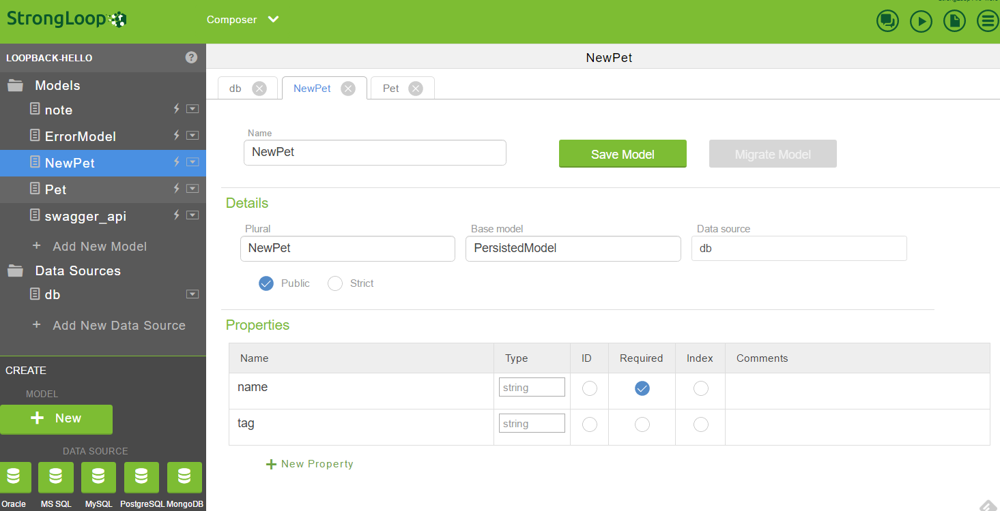
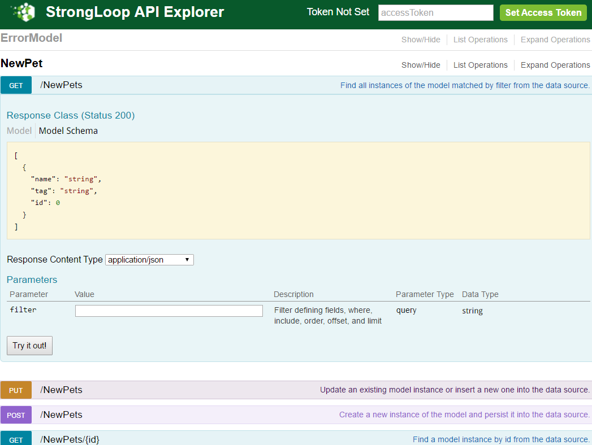

Loopback Framework
尽管我不怎么欣赏它的内部实现，但是不得不说这是Open API开发框架的又一次创新，使得开发API的过程更为简单和易用。
LoopBack 是一个基于Express的开源 Node.js API框架，用于快速构建自己的OpenAPI平台，提供API接口给mobile, web和其他设备。它能够同时连接多种不同的数据源，非常简单的暴露model为标准的RESTful API，用nodejs 开发API，提供JS, iOS 和 Android SDKs.
StrongLoop在2015年被IBM收购了.
Features
- 快速创建动态 end-to-end REST APIs.
- 连接设备/浏览器到数据和服务。
- 使用 Android, iOS, and AngularJS SDKs 轻松创建客户端应用.
- 提供 push, 文件管理, 第三方登录, 以及 geolocation 的附加组件.
- 使用
StrongLoop ArcIDE 可视化的编辑，部署和监视 LoopBack API服务. - StrongLoop API网关充当API消费者与API提供者之间的中介，进行外部化的安全管理API。
- 可以部署运行在内部或者云端
Install
安装前提：use the latest LTS (long-term support) release of Node.js(v4.x).
1 | npm install -g strongloop |
创建 loopback 应用
由 loopback slc脚手架工具，我们可以轻松的完成许多工作。包括创建应用，model，relation，acl等等。
1 | $ slc loopback |
参阅官方的入门指南： Getting Started.
在本地运行 StrongLoop Arc IDE：
1 | PORT=4000 HOST=0.0.0.0 slc arc |
在IDE上只需要简单的设置数据源和model，就可以将指定的数据作为Restful API提供出去了。
注意IDE要求在 Strongloop 上注册方可使用。

skip the online login:
%HOME%/AppData/Roaming/npm/node_modules/strongloop/node_modules/strong-arc/clinet/www/scripts/modules/arc-user/arc-user.service.js:
1 | svc.getCurrentUserId = function () { |
当你在IDE上设置添加并暴露出数据 model 后，就可以在IDE上直接运行。你可以在这个地址: http://localhost:3000/explorer/ 上查看产生的API的联机互动文档：

另外在IDE上可以直接启动，停止服务。
事实上，就MVC模式而言，Loopback的应用一般不用关心Controller，所有的操作（远程方法）都直接在Model上暴露和控制，进一步简化了开发。因为是 API，所以View也不用关心，只需要在配置中定义支持的输出格式(json, xml)。
Ok, 接下来以开发一个简单的博客API系统为例，进行说明。本例子修改自TopBlogger-Loopback，特此说明。
首先该博客系统有两个 model: Blog 和 Comment。我们使用loopback内置的用户体系进行登陆认证，当然你可以扩展这个用户体系。这些 Model 的关系如下：
- 一篇博文(Blog)属于一个用户(User)
- 一篇博文可以有许多评论(Comment)
- 一篇评论(Comment)属于一个用户(User)
就认证授权来说，匿名用户只能看博文或者评论，不能发表。只有登录的用户才可以发表博文或者评论，并且只可以编辑或者删除自己的博文或评论。
首先你要选择一个你希望使用的数据库，loopback支持如下的数据库：
- Memory connector：内置
- MongoDB connector：loopback-connector-mongodb
- MySQL connector：loopback-connector-mysql
- PostgreSQL connector：loopback-connector-postgresql
- SQL Server connector：loopback-connector-mssql
- DB2 connector：loopback-connector-db2
- Oracle connector：loopback-connector-oracle
- Redis connector:loopback-connector-redis
- Cloudant connector:loopback-connector-cloudant
注意的是有的数据库支持还是处于EA(Early Access)状态，并不稳定要留意文档。
另外还有一些非数据库的Connector:
- Email connector：内置
- Push connector: loopback-component-push
- Remote connector: loopback-connector-remote
- REST: loopback-connector-rest
- SOAP: loopback-connector-soap
- Storage connector: loopback-component-storage
还有社区维护的Connector,在这里.
选择好数据库后，需要安装相应的数据库Connector组件，在项目的根目录下:
1 | npm install loopback-connector-mysql |
使用data source generator建立新的数据源。
slc loopback:datasource
1 | $ slc loopback:datasource |
这会在 server/datasources.json中增加新的数据源，然后打开该文件，修改相关数据库的登录认证信息：
1 | { |
然后使用model generator协助创建model
slc loopback:model
1 | slc loopback:model |
接下来提示是创建它的属性。然后用同样的方式创建Comment Model.
Blog Model
- title (string)
- content (string)
- tags (array of strings)
- slug (string)
- numOfUpVotes (number)
- numOfDownVotes (number)
- numOfViews (number)
- upvotes (array of strings): userId 的数组
- downvotes (array of strings): userId 的数组
- isPublished (boolean)
- createdDate (date)
- updatedDate (date)
Comment Model
- content (string)
- numOfLikes (number)
- numOfDislikes (number)
- likes (array of strings): userId 的数组
- dislikes (array of strings): userId 的数组
- createdDate (date)
- updatedDate (date)
注意：
- 隐藏字段可以用
hidden参数，将不需要公开的字段名称列在这个数组中。 - Model 有这样一些定制设置:
-
plural- set to a custom string value to use, instead of the default standard plural form. -
strict- set to true to make the model save only instances that have the predefined set of properties. Any additional properties in a save or update operation are not persisted to the data source. False by default. -
idInjection- Whether to automatically add an id property to the model. True by default. -
http.path- customized HTTP path of REST endpoints. -
indexes- 可以设置字段的复合索引，不过注意的是采用官方文档进行设置的时候，Mysql的connector会报错，只能这样设置:1
2
3
4
5
6
7"indexes": {
"some_name_age_index": {
"columns": "name, age", //不能使用keys，会报告: Key column 'undefined' doesn't exist in table
"options": {
"unique": true
}
} -
对于字段单个索引，可以直接写在字段中：
1
2
3
4
5"name": {
"type": "string",
"index": true,
"required": true
},
-
接着就该是建立数据库之间的关系(relation), loopback 提供如下的关系:
- BelongsTo relations
- HasOne relations
- HasMany relations
- HasManyThrough relations
- HasAndBelongsToMany relations
- Polymorphic relations
- Embedded relations
- embedsOne and embedsMany
我们使用loopback提供的relation generator来建立关系：
slc loopback:relation
首先注意，关系的名称不能和属性(字段)名一样。
既然是用户写的博客，那么对博客而已，自然是BelongsTo关系:
1 | $ slc loopback:relation |
还有，博客上应支持不同读者的评论，自然博客上有许多(HasMany)评论：
1 | $ slc loopback:relation |
另外，评论本身也有作者的，所以还需要为Comment增加BelongsTo关系：
1 | slc loopback:relation |
注意：关系对应的方法名称参阅: Accessing related models
Ok, Model 自此建立完毕，建立的文件在项目的/server/models/目录或者/common/models目录下，这个依赖您自己的配置。
那么，对于Scheme化的关系型数据库，如何自动在数据库中建立对应的表和字段呢？很简单，对于如下的数据库，loopback提供了自动迁移（Auto-migrate）机制:
- Oracle
- PostgreSQL
- MySQL
- SQL Server
- MongoDB
注意：
- 在mongoDB中的autoMigrate()会建立缺失的索引，但是不会修改它们，如果索引的定义改变了。所以你必须要么在mongoDB Shell中修改，或者删除他们再重建。
autoMigrate会首先Drop table，然后再建表。要保留数据，请用autoUpdate.
把脚本作为启动脚本放在项目的/server/boot/目录下(启动顺序按ASCII字母表顺序)：
/server/boot/auto-migrate.js:
1 | module.exports = function(app) { |
对了，内置的 Model(User, AccessToken, ACL, RoleMapping, Role) 也应该存到数据库中:
server/model-config.json:
1 | { |
对内置Model的扩展方式可以参阅这里.
好了，现在，我们需要实现访问控制，loopback框架支持通过ACL(Access Control List)来控制权限。
slc loopback:acl
权限：
- 未登录用户只能看博客或者评论
- 登录用户可以:
- 创建博文
- 编辑自己的博文
- 发表自己的博文
- 顶一篇博文(Upvote)
- 踩一篇博文(Downvote)
- 创建博文的评论
- 编辑自己的评论
- 喜欢某个评论
- 不喜欢某个评论
首先，针对博客和评论，我们对任何人禁止掉所有的权限访问。
1 | $ slc loopback:acl |
然后再允许所有人能阅读博客和评论。
1 | ? Select the model to apply the ACL entry to: Blog |
允许认证用户能创建新的博文:
1 | ? Select the model to apply the ACL entry to: Blog |
确保只有博文作者才编辑和发布博文：
1 | ? Select the model to apply the ACL entry to: Blog |
认证用户可以顶或踩:
1 | ? Select the model to apply the ACL entry to: Blog |
最后，如法炮制评论:
1 | ? Select the model to apply the ACL entry to: Comment |
接下来就该添加新增的功能(remote methods)，例如：
- 发布一篇博文：
/blogs/:id/publish - 顶：
/blogs/:id/upvote - 踩：
/blogs/:id/downvote - 喜欢(评论)：
/comments/:id/like - 不喜欢(评论)：
/comments/:id/dislike
打开您models文件夹下的blog.js文件:
1 | // Register a 'publish' remote method: /blogs/:id/publish |
注意：如果直接在代码里调用remoteMethod去添加远程方法，那么在Model.definition.settings.methods中不会出现。
另外，通过禁止Model内置的删除方法，还可以禁止任何删除评论,修改 models/comment.js:
1 | Comment.disableRemoteMethod('deleteById', true); |
我们还可以通过修改路由文件 /server/boot/routes.js 来扩展自己的定制路由，比如我们希望能通过这样的路径访问到用户的博文: /:user/:slug：
1 | app.get('/:user/:slug', function(req, res) { |
Storage component
通过使用Storage component获得支持文件上传下载功能。该组件作为一种特殊的Datasource来使用，它支持如下的存储：
- 云存储
- Amazon
- Rackspace
- Openstack
- Azure
- 本地文件存储
存储组件将文件内容组织为容器containers 和文件 files。一个container包含一系列的文件，每一个文件必属于一个容器。
Containergroups files, similar to a directory or folder. A container defines the namespace for objects and is uniquely identified by its name, typically within a user account.- NOTE: A container cannot have child containers.
Filestores the data, such as a document or image. A file is always in one (and only one) container. Within a container, each file has a unique name. Files in different containers can have the same name.
安装
1 | $ npm install loopback-component-storage |
Datasource
接着我们需要创建一个新的Datasource：
可以直接在 /server/datasources.json 文件中创建：
1 | "myfile": { |
也可以在程序中创建:
server/server.js:
1 | var ds = loopback.createDataSource({ |
然后就可以在API中访问:
| REST URI | Description | Container Model Method |
|---|---|---|
| GET /api/containers | List all containers. | getContainers(cb) |
| GET /api/containers/:container | Get information about specified container. | getContainer(container, cb) |
| POST /api/containers | Create a new container. | createContainer(options, cb) |
| DELETE /api/containers/:container | Delete specified container. | destroyContainer(container, cb) |
| GET /api/containers/:container/files | List all files within specified container. | getFiles(container, download, cb) |
| GET /api/containers/:container/files/:file | Get information for specified file within specified container. | getFile(container, file, cb) |
| DELETE /api/containers/:container/files/:file | Delete a file within a given container by name. | removeFile(container, file, cb) |
| POST /api/containers/:container/upload | Upload one or more files into the specified container. The request body must use multipart/form-data which the file input type for HTML uses. | upload(req, res, cb) |
| GET /api/containers/:container/download/:file | Download a file within specified container. | download(container, file, res, cb) |
| Get a stream for uploading. | uploadStream(container, file, options, cb) | |
| Get a stream for downloading. | downloadStream(container, file, options, cb) |
如果是用本地文件系统，那么每创建一个容器，对应于每创建一个子目录:
1 | curl -X POST --header "Content-Type: application/json" --header "Accept: application/json" -d "{ |
注意当前container只支持1级目录，不支持多级目录。
深入探索
slc loopback:swagger
即由 loopback:swagger 可以把 Open API 文档直接导入进 loopback 应用。不过，它会针对API文档的basePath虚拟一个非持久化model: swagger_xxx，在Open API上的接口从这个虚拟model上暴露出来。
1 | slc loopback:swagger <your_api_doc_path> |
slc应该提供一个方便的model以及remote method文档描述和生成工具。
内建的 models
参阅：这里
the built-in models attach to the ‘db’ datasource automatically:
1 | var dataSourceTypes = { |
扩展内置Model，除了官方文中提到方法外，还可以在 /server/boot/文件中直接对原有Model增加字段。
User
Default User ACLs.
- DENY EVERYONE *
- ALLOW EVERYONE create
- ALLOW EVERYONE login
- ALLOW EVERYONE logout
- ALLOW EVERYONE confirm their identity
- ALLOW EVERYONE reset their own password
- ALLOW OWNER deleteById
- ALLOW OWNER findById
- ALLOW OWNER updateAttributes
默认字段:
- realm(string)
- username(string)
- password(string, required)
- email(string, required)
- emailVerified(boolean)
- verificationToken(string)
Register
1 | curl -X POST -H "Content-Type:application/json" \ |
自带的注册验证为电子邮件验证，另外如果需要在注册前验证是否用户名或者邮件地址已经被注册，可以使用 beforeRemote hook.
启用电子邮件验证(必须先设置Mail datasource):
1 | //server/model-config.json |
/common/models/user.js:
1 | var config = require('../../server/config.json'); |
模板文件 verify.ejs:
1 | This is the html version of your email. |
ACL(Access Control List)
访问控制概念
- Principal: An entity that can be identified or authenticated.
- Represents identities of a request to protected resources.
- eg:
- A user
- An application
- A role (please note a role is also a principal)
- Role: A group of principals with the same permissions.
- eg:
- Dynamic role:
- $everyone (for all users)
- $unauthenticated (unauthenticated users)
- $owner (the principal is owner of the model instance)
- Static role: admin (a defined role for administrators)
- Dynamic role:
- eg:
- RoleMapping: Assign principals to roles
- Statically assigns principals to roles.
- eg:
- Assign user with id 1 to role 1
- Assign role ‘admin’ to role 1
常规处理步骤
- 指定用户角色. 定义需要的用户角色。例如：匿名用户，认证用户和管理者。
- 定义每一个角色或者Model的访问权限D. 例如：匿名用户只可以读银行列表，但是不允许其它操作.
LoopBack 的models 有一套内置的方法，每一个方法被映射为READ或者WRITE访问权限. In essence, this step amounts to specifying whether access is allowed for each role and each Model + access type, as illustrated in the example below. - 实现认证: 添加代码区创建(注册)用户，登录用户（获取并使用认证token），并注销用户。
如何暴露隐藏 models, 方法 和 API
通过 REST API 暴露一个 model 非常简单，只需要设置 /server/model-config.json 文件的 public 属性为 true 即可:
1 | "Role": { |
隐藏方法和REST API
如果你不想暴露特定的 create, retrieve, update, delete 操作, 那么你可以通过调用Model的 disableRemoteMethod() 方法来实现。在你的model文件(common/models/目录下)中加入以下的代码，隐藏预定义的API方法:
1 | var isStatic = true; |
如果你想隐藏的方法是在prototype上的实例方法,那么你需要设置 isStatic 为 false:
1 | var isStatic = false; |
定义使用Role
LoopBack 支持静态或动态的角色。静态角色保存在数据库中并映射到用户。作为对比，动态角色并不事先和用户绑定，它是在访问时才被确定。
Static roles
创建静态 Role 记录:
1 | Role.create name: 'admin', (err, role)-> |
但是更普通的用法应该是：
1 | Role.create name: 'project.del', (err, role)-> |
这样会在权限角色上挂大量的用户自定义角色，太糟糕了，所以只能通过编写动态角色来做。
Dynamic roles
大多数时候，静态角色的灵活性并不够，因此 Loopback提供了在运行时刻确定权限的动态角色。
并且 LoopBack 提供下列内置的动态角色：
| Role 对象属性 | 字符串值 | 说明 |
|---|---|---|
| Role.OWNER | $owner | Owner of the object |
| Role.AUTHENTICATED | $authenticated | authenticated user |
| Role.UNAUTHENTICATED | $unauthenticated | Unauthenticated user |
| Role.EVERYONE | $everyone | Everyone |
如何定义动态角色? 只需要在启动(boot)脚本中使用 Role.registerResolver(name, fnRoleHandler) 配置自己的定制角色处理器即可。该函数有两个参数:
- 该动态角色的名称
- 角色处理器异步函数，确定一个 principal 是否在该动态角色里。该函数传入的参数为
function(role, context, callback)
- role: 来自的role
- content: 当前期望访问的内容principal.
- callback: 返回结果回调函数。
function(error, result)- error: 如果有错误则把error对象传入该参数，否则应该是
null - result: (boolean) ，
true表示允许，false表示拒绝。
- error: 如果有错误则把error对象传入该参数，否则应该是
例如：
1 | // /server/boot/script.js |
接下来就可以在model中使用该动态角色teamMember:
1 | // /common/models/model.json |
终端打印
在开发过程中希望通过终端输出调试信息，则可以根据自己的模块以及组织引入：
1 | var log = require('debug')('common:autoMigrate'); |
使用时候:
1 | $ DEBUG=<pattern>[,<pattern>...] node . |
支持通配符:
1 | $ DEBUG=common:* node . |
具体的内置模块调试信息参阅: Setting debug strings